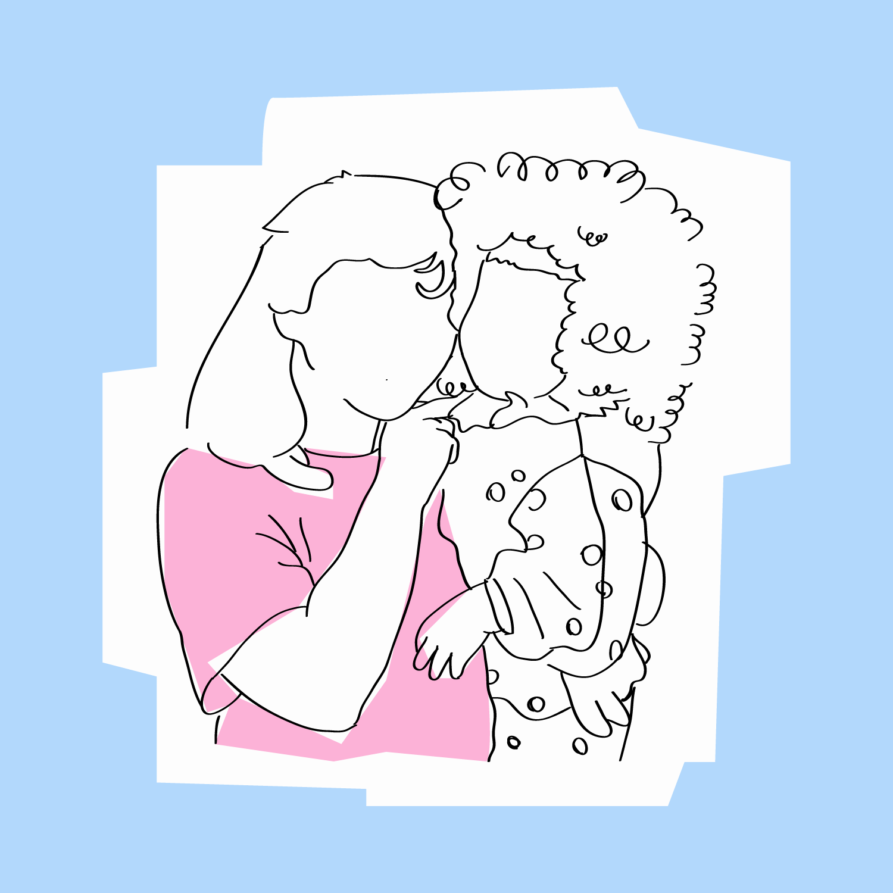
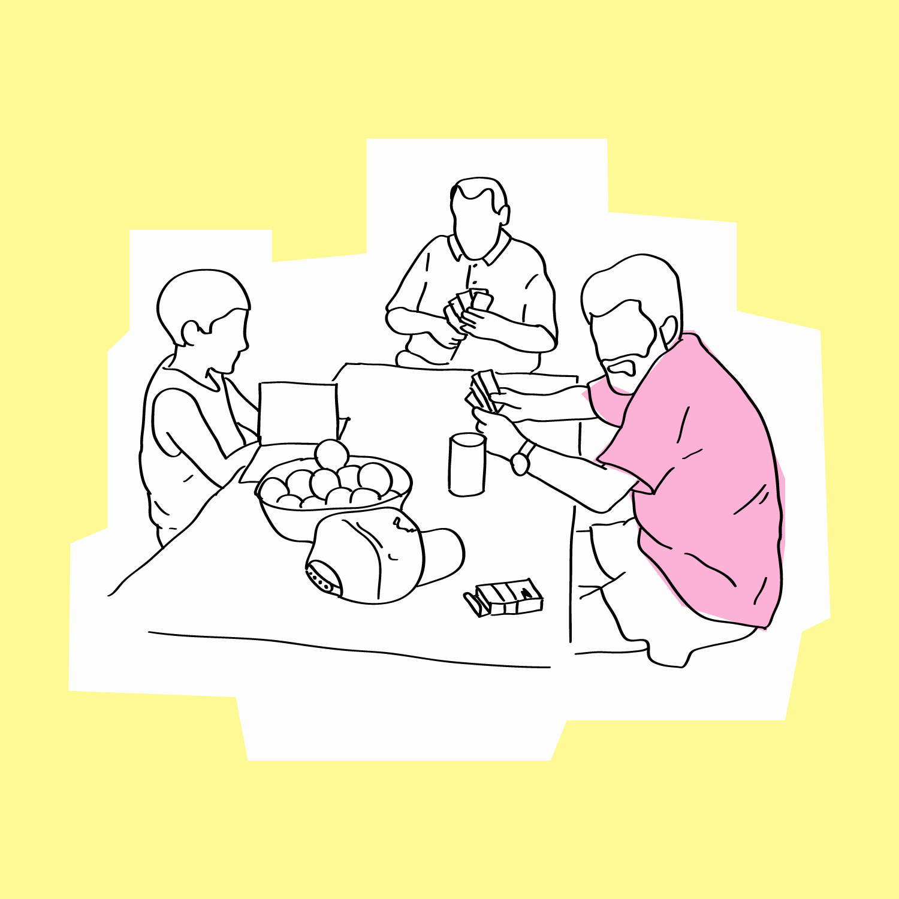
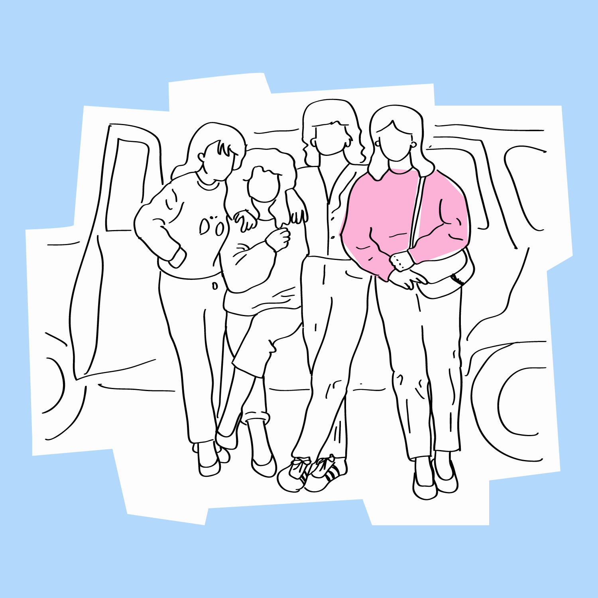
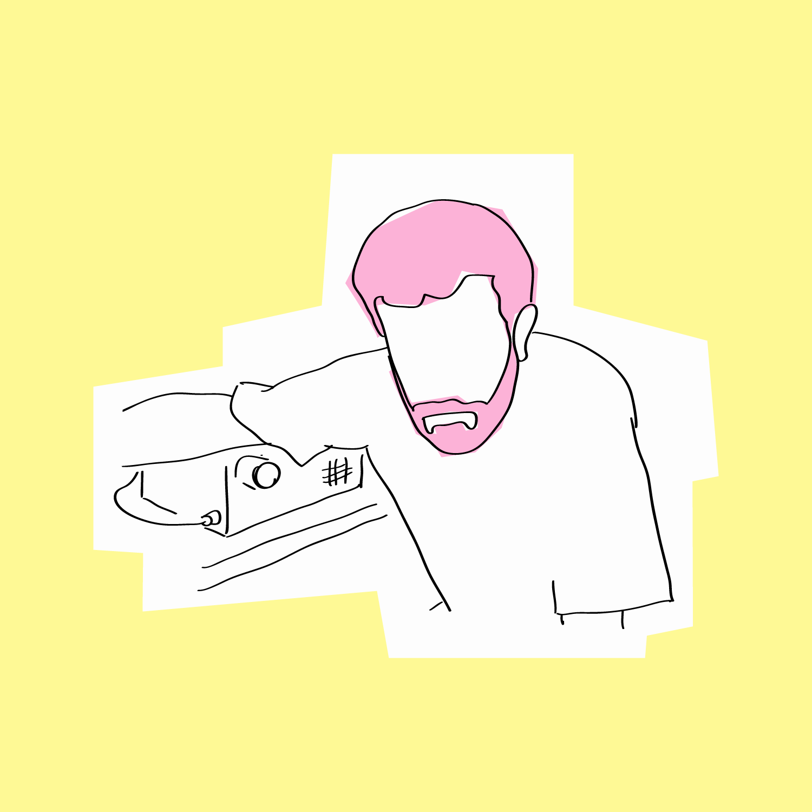

Episodios

Episodio 1: Julián
La carta que te hizo llorar hoy la escribió Bianca Mera. Es estudiante de comunicación y editora de "Fantasma", un proyecto de edición postal. Vive en CABA.

Episodio 2: Ramón
La carta que te hizo llorar hoy la escribió Jule Gore. Nació en el sur pero vive en La Plata. Es parte del colectivo "Las Pibas". Tiene un fanzine titulado "En Europa no se consigue".

Episodio 3: Verónica
La carta que te hizo llorar hoy la escribió Claudio. Vive en CABA y no quiere que sepan más nada de él.

Episodio 4: Estanislao
La carta que te hizo llorar hoy la escribió Boris. Vive en Córdoba y publicó “Te convertí en literatura y encima te quejás” por Hiedra Editora.